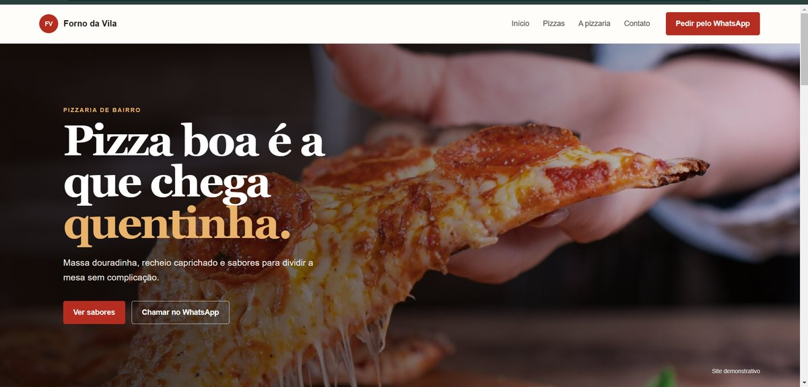
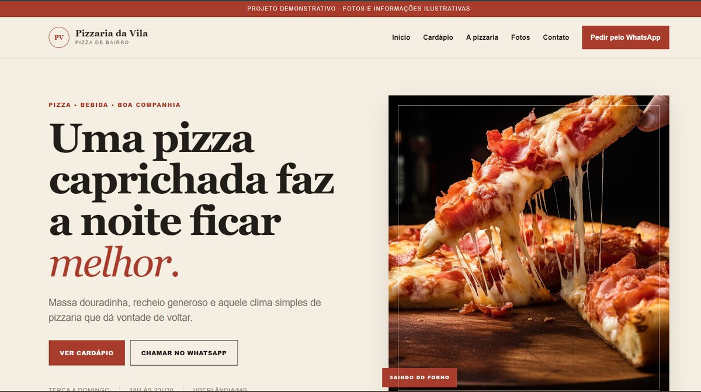
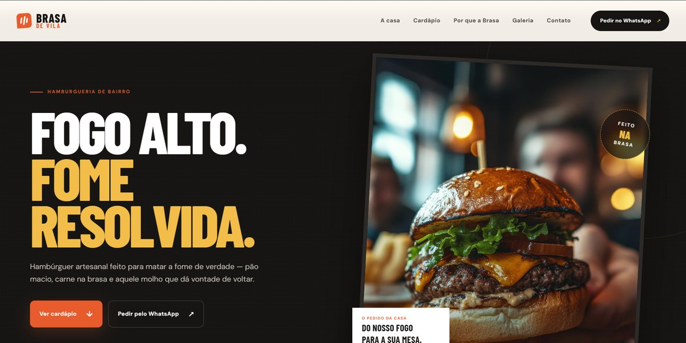
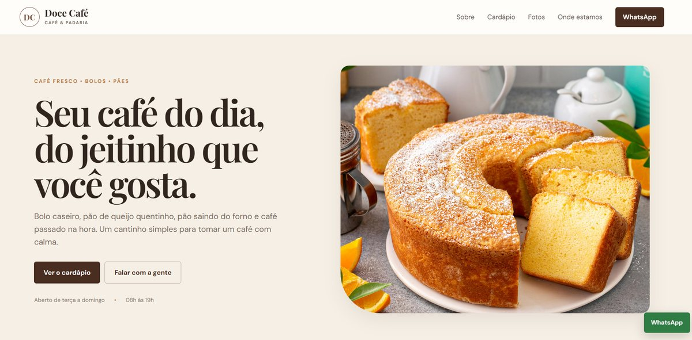
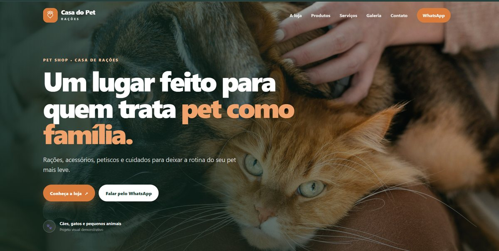
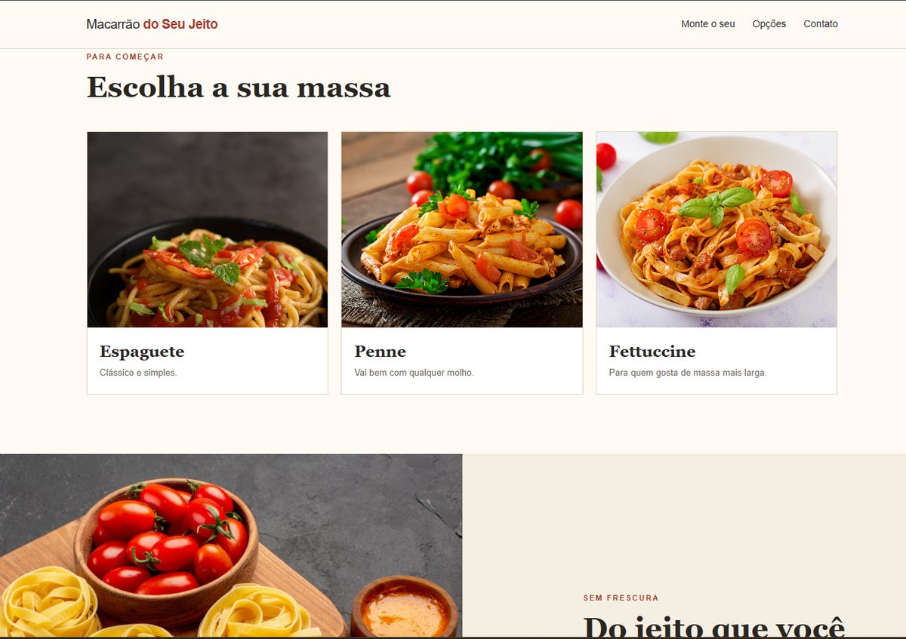
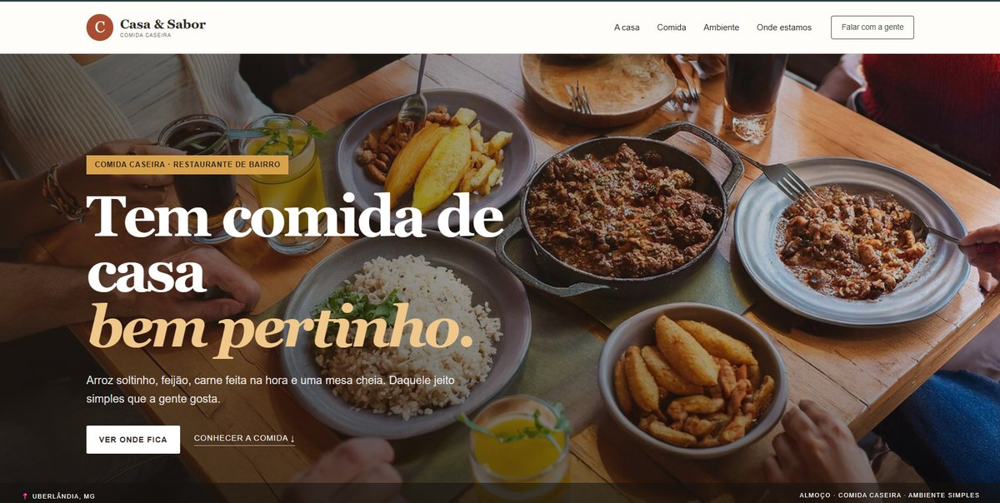
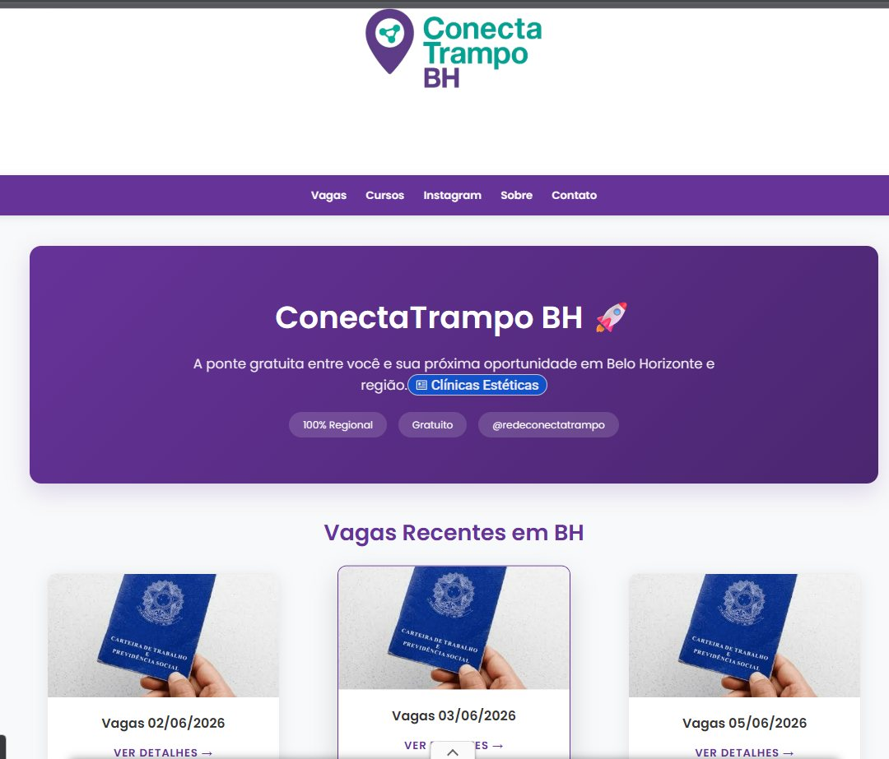
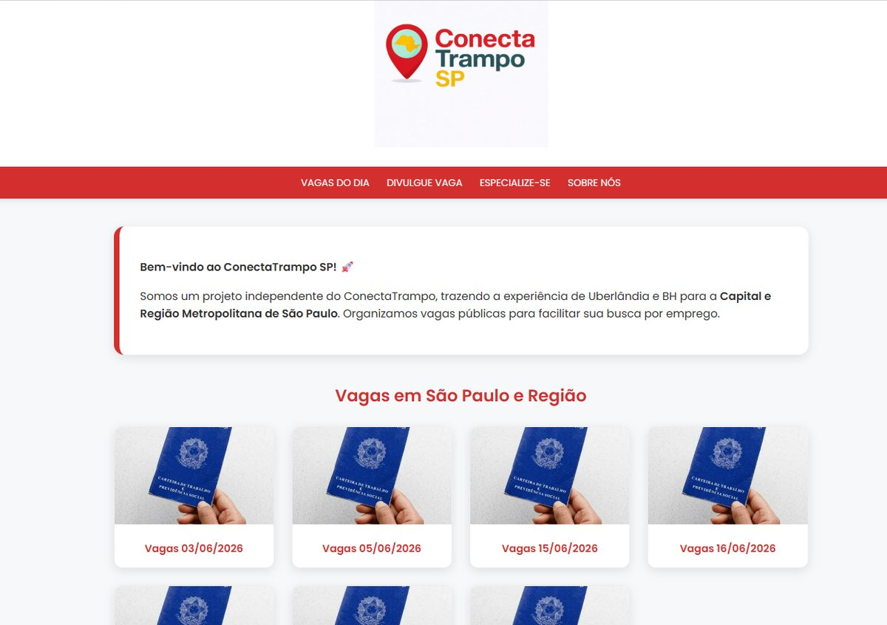
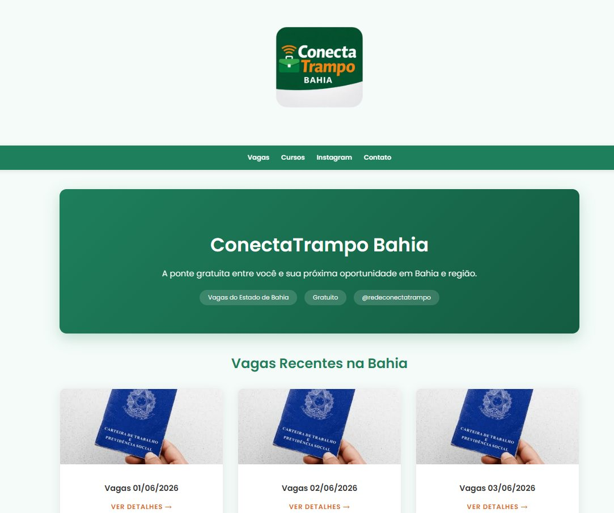

Site institucional
Apresente sua empresa, sua história, seus serviços e os motivos para escolher você.
SUA EMPRESA, BEM APRESENTADASITES PARA PEQUENAS EMPRESAS
A AzurTech cria e configura sites para empresas que precisam apresentar seus serviços, mostrar seus produtos e facilitar o contato com clientes. Tudo adaptado para celular.
Seu trabalho, apresentado do jeito certo.
01 / COMO POSSO AJUDAR
Cada empresa tem uma necessidade diferente. Antes de começar, conversamos sobre o que você faz e o que o site precisa ter.
Apresente sua empresa, sua história, seus serviços e os motivos para escolher você.
SUA EMPRESA, BEM APRESENTADAOrganize seu catálogo, portfólio, cardápio ou galeria em um espaço fácil de navegar.
INFORMAÇÃO SEM COMPLICAÇÃOAjudo a colocar o site no ar e configuro os elementos necessários para sua presença online.
DO PROJETO AO ARCada projeto é combinado conforme o escopo. Funcionalidades, domínio, hospedagem e manutenção são alinhados antes do início.
02 / PORTFÓLIO
Os cartões dos demonstrativos abrem os sites completos em uma nova aba. Você pode navegar por cada exemplo antes de falar comigo.

VER SITE ↗Demonstrativo · Pizzaria

VER SITE ↗Demonstrativo · Pizzaria

VER SITE ↗Demonstrativo · Hamburgueria

VER SITE ↗
VER SITE ↗Demonstrativo · Pet shop

VER SITE ↗Demonstrativo · Massas

VER SITE ↗Demonstrativo · Restaurante

VISITAR PROJETO ↗Publicado · Projeto próprio

VISITAR PROJETO ↗Publicado · Projeto próprio

VISITAR PROJETO ↗Publicado · Projeto próprio
As imagens mostram uma prévia de cada site. Clique em qualquer projeto para abrir a versão completa em uma nova aba. Os demonstrativos usam nomes e informações ilustrativas.
03 / QUEM ESTÁ POR TRÁS
Tenho 21 anos e trabalho como analista de sistemas. Também estudo Análise e Desenvolvimento de Sistemas e venho criando sites para colocar em prática o que aprendo e ajudar empresas a terem seu espaço na internet.
Um desses projetos é o Conecta Trampo, que reúne oportunidades de emprego por região. Na AzurTech, quero oferecer esse mesmo cuidado para empresas que precisam de um site simples, bem organizado e feito para sua realidade.
04 / SEM COMPLICAÇÃO
Você acompanha o processo e sabe o que está sendo feito em cada etapa.
Entendo o que sua empresa faz e o que precisa comunicar.
Alinhamos páginas, conteúdo, referências e funcionalidades.
O site ganha forma e você pode revisar a apresentação.
Com tudo aprovado e os detalhes combinados, colocamos o projeto no ar.
05 / VAMOS CONVERSAR
Me conte um pouco sobre sua empresa. A gente conversa sobre suas necessidades e sobre um projeto que faça sentido para o seu negócio.
Orçamento definido conforme as necessidades de cada projeto.